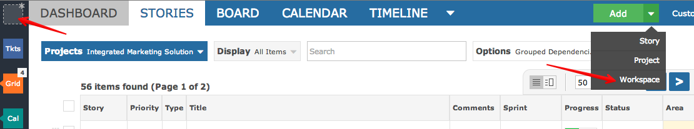

There are two ways to add a new workspace.

A workspace should be assigned a meaningful code and color.
Every workspace can be assigned a taxonomy such as agile, issue tracking or help desk tickting.
For example, selecting Agile will mean that Sprint/Area words are used instead of Version/Component.
You can select which views (menu/tab options) are available within the workspace. Tick the views you require -- you can always change them any time.